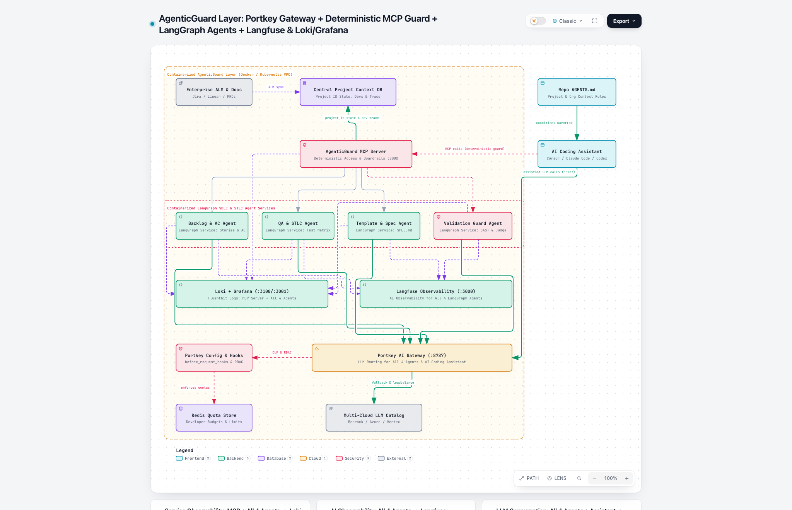

Don't build another coding assistant.
Govern and standardize the ones we already use.
AgenticGuard Layer is a thin, containerized governance, observability and SDLC/STLC standardization layer that sits around Cursor, Claude Code, Codex or Copilot — it does not replace them.
Navigate with ← → keys, the buttons below, or the slide menu.
The answer in one slide
Do not build a coding assistant
Editor UX and foundation models are where Microsoft, OpenAI, Anthropic and funded startups compete. We would be outspent on the part that is already good enough to buy.
Own the layer vendors don't
Assistants optimize one developer's session. Enterprises need cross-tool control: model routing, quotas, data-leak prevention, shared project context, standard SDLC/STLC outputs and evidence that work meets acceptance criteria.
A small, stage-gated pilot
2–4 engineers, one pilot team, explicit kill criteria. We compose open-source parts (Portkey, LangGraph, Langfuse, Loki/Grafana) and build only the thin differentiated piece.
The category today: assistants are strong for the individual
Being fair to the incumbents matters — it shapes where an opportunity can and cannot exist.
- Code completion, chat, multi-file edits and agentic tasks inside the editor or terminal
- Local repository understanding (indexing and reading the files the developer has open)
- Rapid model upgrades funded by the vendors themselves
- Extensibility hooks: custom base URLs, MCP tools and repo instruction files (e.g.
AGENTS.md)
- Optimized for one developer, one session — not for a team or a portfolio of projects
- Each tool has its own model catalog, admin console and telemetry
- Output quality depends on the prompt, not on a shared, enforced process
- No reason for a vendor to make it easy to compare or switch to a competitor
Conclusion: competing on the assistant itself is the wrong fight. The gaps appear between tools, developers and SDLC stages.
Five gaps that materially shape the opportunity
No SDLC/STLC standardization
Assistants turn prompts into code, but don't standardize backlog + acceptance criteria, QA test cases, project templates/specs, or a validation gate before merge.
Context drift, no traceability
Each assistant is a local silo. Git tracks commits, not shared project context, who is allowed on a project, or which developer is on which story and stage.
Model lock-in & fragmented catalogs
Some tools are tied to one vendor's models, others expose a limited catalog. No single control point for the company's approved providers.
No unified quotas, RBAC or DLP
No single interception point to decide which roles use expensive models, cap spend per developer, or block secrets and PII before they leave.
Blind on cost & quality
No unified view of LLM/agent traces, token cost and quality scores, nor of service health — so ROI and "which assistant is better for us" are opinions.
Common thread
All five are organizational problems that sit across tools. No single assistant vendor is incentivized to solve them for its competitors.
Where we play: buy the commodity, build the thin layer
Let every developer keep their preferred assistant, while the organization gets one control point for models, spend and data, one shared source of project truth, and a standard, verifiable path from story to merge.
Narrow enough for 2–4 engineers to validate the central hypothesis with one pilot team.
The product: four elements
Portkey AI Gateway (self-hosted, open source)
All LLM calls from the assistant and from our 4 agents go through it: approved model catalog, role-based routing, Redis quotas, deterministic before_request_hooks that block secrets/PII, and provider fallback.
Access & guardrail gate + 4 LangGraph agents
The MCP server checks the developer is allowed on the project_id and enforces deterministic input/output rules before dispatching to backlog_ac, qa_stlc, template_spec, validation_guard — individually or in any order.
Shared truth keyed by project_id
Project context and standards, stage outcomes, allowed developers (project_developers) and who-works-on-what with branch and stage (developer_work_state) — a complement to Git, not a replacement.
Langfuse + Fluentbit → Loki → Grafana
Agents report AI traces, cost and rubric scores directly to Langfuse; the MCP server and all agents ship service logs through an embedded Fluentbit library to Loki, visualized in Grafana.
How one story flows — complement, not compete
backlog_ac
Docs/ALM → story + Gherkin acceptance criteria, synced to Jira/Linear/ADO.
qa_stlc
Acceptance criteria → test matrix (happy, edge, security) + pytest stubs.
template_spec
Only scaffolding, signatures, SPEC.md, AGENTS.md. No business logic.
Implements
Their own Cursor / Claude Code writes the logic against the spec and tests.
validation_guard
AST/SAST/type/test checks + LLM acceptance-criteria judge.
Signed receipt
X-AgenticGuard-Validation-Receipt stored in the DB; ALM ticket updated.
qa_stlc on a hotfix) or in any custom order, depending on project maturity.What we do differently — and what we deliberately leave out
- Harness-agnostic: integrates through base-URL override, MCP and
AGENTS.md— works with whichever assistant a team prefers. - Complements code generation: our agents produce contracts (criteria, tests, specs); the assistant writes the code.
- Process over prompt: a standard, enforceable path from story to merge, with a verifiable receipt.
- Team & portfolio scope: shared state by
project_idinstead of per-session memory. - Compose, don't reinvent: gateway, orchestration and observability are open-source components.
- No IDE, editor fork or chat UI — the assistants already do this well.
- No model training or fine-tuning — we route to providers we already contract.
- No full-codebase vector indexing — assistants index local code; we store structured project context.
- No custom proxy or tracing UI from scratch — Portkey, Langfuse and Grafana cover it.
- No autonomous "write the whole feature" agent — keeps scope small and humans in control.
Why someone would supplement their assistant with this
Keeps their tool
No forced switch. Gets ready-made criteria, tests and specs, plus early feedback from the validation gate before review.
Aligned team
One source of project truth, standard outputs per stage, and visibility of who is on which story — across tools.
One control point
Deterministic secret/PII blocking, role-based model access and audit logs — independent of which assistant is used.
Evidence, not opinion
Spend and validation results per assistant, so renewals and switches are decided on our own data.
Architecture of the first credible version

The decisions that matter most
All LLM traffic via Portkey with group-scoped configs and fallback across providers. Context fetched by project_id from the Central DB in a stable order to help prompt caching.
Left to the assistant locally. We condition it with AGENTS.md + SPEC.md and keep cross-developer state in the DB.
Two tiers: project-level authorization at the MCP server; model RBAC and quotas at the gateway via x-portkey-metadata.
LangGraph StateGraph with conditional edges: single agent or any custom sequence, state persisted per step.
Deterministic pre-flight DLP at the gateway; deterministic AST/SAST/tests first, LLM judge second, in validation_guard.
Langfuse for AI traces/cost/scores; Loki + Grafana for service logs. Stage outcomes in the DB enable human sign-off before lock-in.
Deterministic checks stay on the hot path; telemetry is async and fail-open. Portkey retry/fallback on 429/5xx. Latency budget to be measured in the pilot.
Bi-directional ALM sync (Jira/Linear/ADO), receipt checks in CI, containerized deployment (Docker Compose / Kubernetes).
Largest risks and the assumptions we are making
| Risk / assumption | Severity | Mitigation |
|---|---|---|
Assistants ignore AGENTS.md or bypass the gateway base URL | High | Don't rely on instructions alone: a Git pre-commit hook and CI gate block merges without a valid validation receipt for that project_id/story_id; network egress restricted to the gateway. |
| Generated tests don't match what the assistant implements | High | Contract-first scaffolding: template_spec emits the exact function signatures together with the pytest contract. |
| Upstream agents add friction developers won't accept | Medium | Agents are optional and modular; measure cycle-time impact in the pilot and automate via ALM webhook if manual use is too slow. |
| LLM judge is noisy or inconsistent | Medium | Deterministic checks decide pass/fail first; judge scores are logged to Langfuse and reviewed by humans before they gate anything. |
| Observability adds latency | Low–Med | Langfuse and Fluentbit shipping are asynchronous and fail-open. |
Key assumption: assistants keep supporting custom base URLs and MCP tools — today they do; it's the foundation of harness-agnostic integration.
A deliberately small prototype that tests the riskiest assumptions
- LangGraph agents run in a custom sequence and standalone, persisting outcomes and developer work state by
project_id - Gateway logic: RBAC model downgrade, secret blocking (HTTP 446), quota block (HTTP 429), provider fallback
validation_guardrejects unsafe code (eval, missing types/docstrings) and issues a receipt for compliant code- Unauthorized developer blocked from a project; Langfuse spans/scores and Fluentbit→Loki log records produced
Honest scope: LLM providers and Langfuse/Loki exports are simulated in-process so it runs with zero dependencies. It validates control flow and contracts — not model quality or production latency.
Code: db.py · gateway.py · agents_mcp.py · observability.py · AGENTS.md
What we measure — and what would make us change course
- First-pass validation rate — share of PRs passing tests, SAST and acceptance criteria on the first attempt
- Rework / review cycles per story and story cycle time
- Cost per validated story, per assistant (Langfuse)
- DLP interceptions on seeded secrets and gateway latency overhead (Grafana/Loki)
- Adoption: share of sessions that actually call the MCP tools
We have no baseline data yet — the first two pilot weeks measure the team without the layer. Targets are set from that baseline, not assumed.
- Upstream agents slow stories down without a clear lift in first-pass quality → move them to an automatic ALM webhook, or drop them
- Assistants routinely skip MCP calls → replace passive
AGENTS.mdconditioning with a CLI / pre-commit wrapper - Vendors ship cross-tool governance at parity → retire the gateway layer and keep only project context + SDLC agents
- No measurable quality or cost difference after the pilot → stop; keep buying assistants as-is
We buy almost everything. We build one thin piece.
| Capability | Decision | Why |
|---|---|---|
| Coding assistants | Buy | Vendors invest far more than we could; developers choose the tool. |
| Foundation models | Buy | Consumed through the cloud providers we already contract. |
| Gateway, orchestration, observability | Compose (open source) | Portkey, LangGraph, Langfuse, Fluentbit/Loki/Grafana — no licence spend to start, replaceable. |
| Project context, SDLC/STLC agents, validation receipts, policies | Build (thin) | Specific to how we deliver software. No vendor sells our acceptance criteria, our standards or cross-tool evidence. |
Reduces vendor risk
One gateway and one context store mean switching assistants or models is a configuration change, not a migration.
Protects the downside
Data-leak prevention and spend caps apply to every tool, including the ones we buy next year.
Makes spend accountable
Cost and validation results per assistant turn renewals into data-driven decisions.
A stage-gated bet with a small, capped downside
Prototype
Control flow, gateway policies, agent orchestration, project state and validation gate proven end-to-end in a runnable prototype.
One team, 2–4 engineers
Deploy the containers, connect real providers and one ALM. Measure a baseline first, then the same team with the layer.
Scale, narrow or stop
Scale only if quality, cost and adoption metrics move against baseline. Otherwise narrow to the parts that worked — or stop.
Defending the recommendation
"Vendors will add governance features anyway."
Likely — inside their own tool. Cross-tool control is against their incentives. If they reach parity, that's a written kill criterion: we retire our gateway layer and keep the parts that remain unique.
"Isn't this just Portkey with extra steps?"
Portkey is the gateway component. The value we build is project context by project_id, standard SDLC/STLC outputs and validation receipts tied to our acceptance criteria.
"Developers will bypass it."
Some will try. Enforcement doesn't depend on goodwill: network egress to the gateway, plus CI gates that require a receipt before merge.
"Why not buy an enterprise AI-governance platform?"
Worth evaluating in the pilot. Those cover the gateway/policy layer; the SDLC/STLC standardization and project state are still ours. Open-source first keeps that option open without lock-in.
Keep buying the best assistants.
Build the thin layer that makes them safe, consistent and measurable.
Approve a time-boxed pilot with one team and 2–4 engineers.
Baseline vs. with-layer evidence on quality, cost per validated story, DLP and adoption.
Explicit criteria to scale, narrow or stop at the decision gate.